Diffusion Model
1 Diffusion Model原理
1.1 整体实现
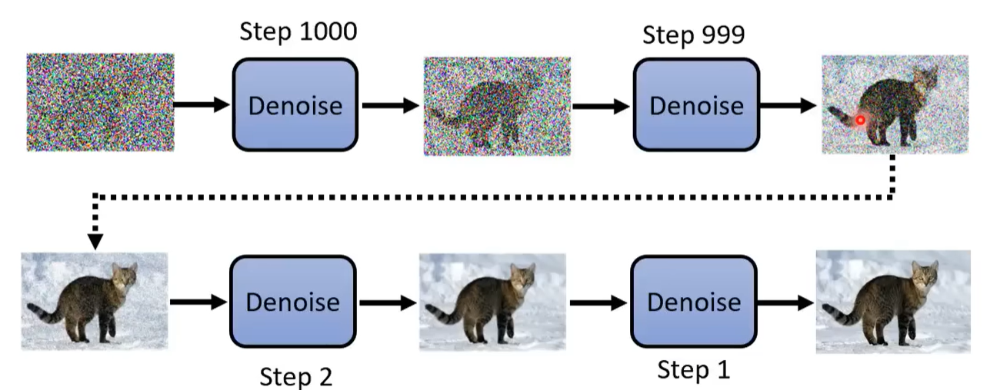
首先要生成一个和要生成图片相同大小的杂讯的图，然后每通过一个 Denoise Network 就把噪音过滤掉一些，把这个过程做很多次，就可以得到想要的图片。其中 Denoise 进行的步骤是实现规定好的，对每个 Denoise 分配一个编号，越靠近最终的图片，编号越小。想要的图片其实就在噪音中，只不过把不想要的部分去除，
上述过程称为 reverser process，把同一个 Denoise Model 使用很多次。但是由于每次输入的图片差异较大，因此如果是同一个模型，可能不一定做的很好。
所以这个 model 除了会接收图片的输入，还会接收一个当前这个图片 noise 的程度的输入，1000 代表现在 noise 部分很大，而 1 代表现在噪音占比很小。
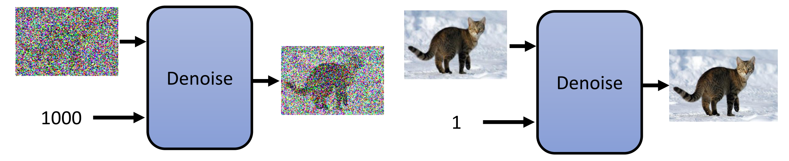
1.2 Denoise内部实现
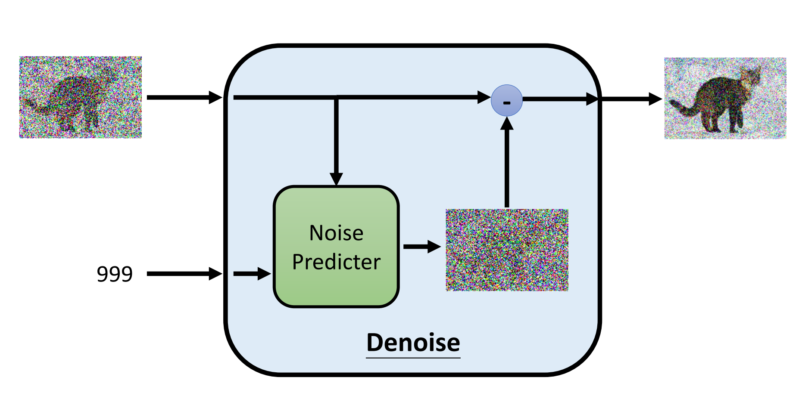
- Noise Predicter：预测这张图片中杂讯的分布，先学习加噪，再进行减噪
把Noise Predicter输出预测的杂讯剪掉一开始的输入，就得到去掉部分噪音之后的图片。
为什么要这么设计：因为产生满足噪声分布的数据更简单，因此学习噪声的分布。
1.3 如何训练Noise Predictor
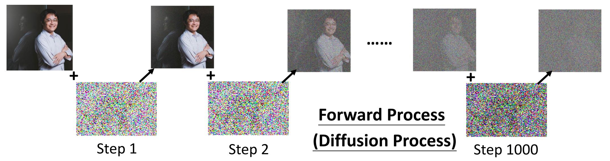
Noise Predictor的训练数据是人为创造出来的，自己不断对其加噪音，最后得到一个全是噪音的图片。
这个加噪音的过程称为forward process，又称为duffsion process。通过这个过程，就有了Noise Predictor的训练数据—带噪音的图片以及这是第几次加噪音。
怎么把用户输入的文字考虑进来？在进行训练的过程中，训练数据需要是图片和文字成对的资料。
现在常见的文本到图像的生成模型的训练数据中就有很多种语言的数据，现在Denoise部分除了有图片的输入外，还有文字的输入。
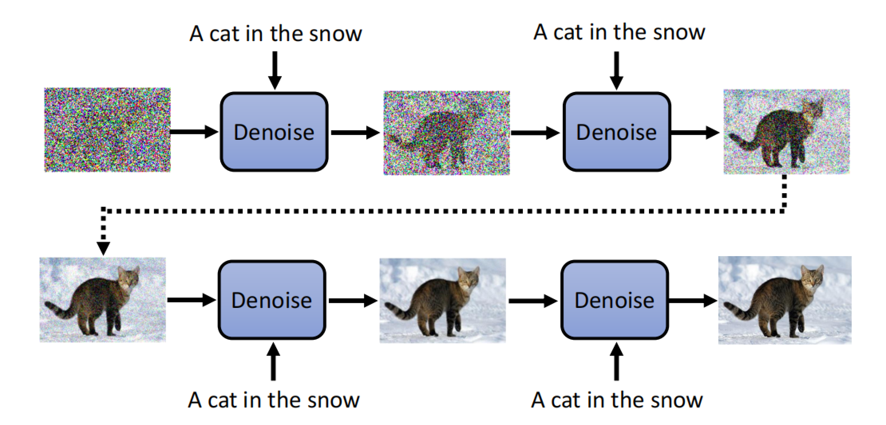
通常在Noise Predictor中需要加上一个文字的输入，如下：
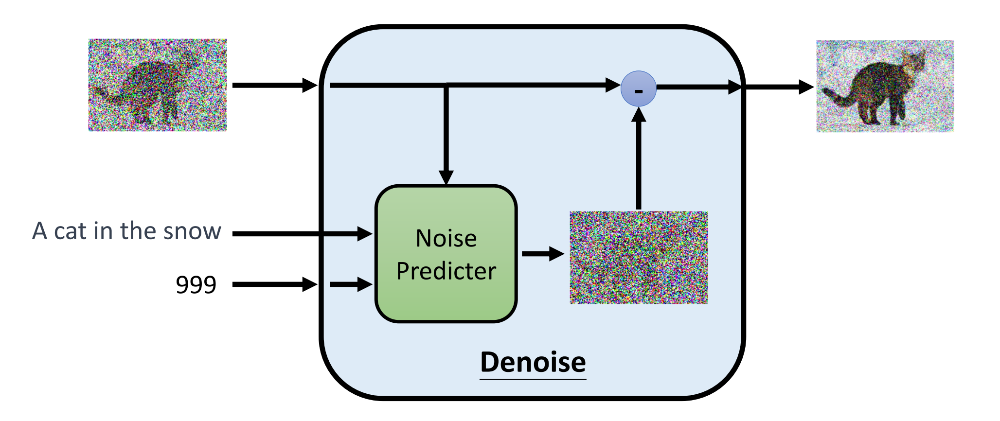
训练的部分也需要进行修改，通常在昨晚diffusion process之后，训练的同时给Noise Predicter也是3个输入：图片、文字和第几步。
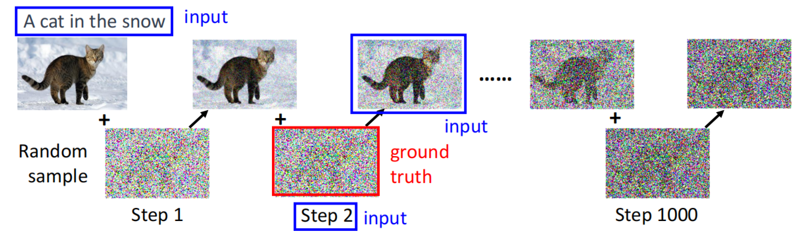
2 常见模型分析
2.1 模型架构
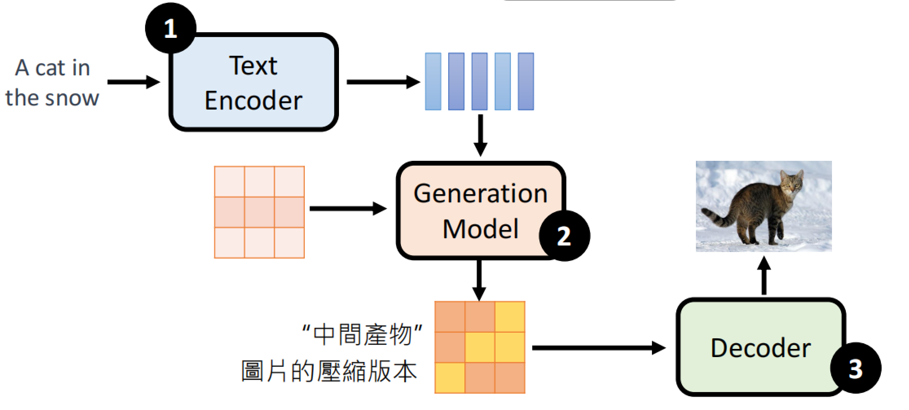
现在比较好的图像生成模型主要包含三个部分：
- 文本编码器：把文字的叙述变成一个向量
- 生成模型：输出一个中间产物，代表图片被压缩后的版本，可以是一个人可以看懂的模糊的内容，也可以是人看不懂的内容
- 解码器：从压缩后的版本还原为原来的图像
通常这三个部分分开训练，最后组合在一起使用。
2.2 模型举例
2.2.1 Stable Diffusion
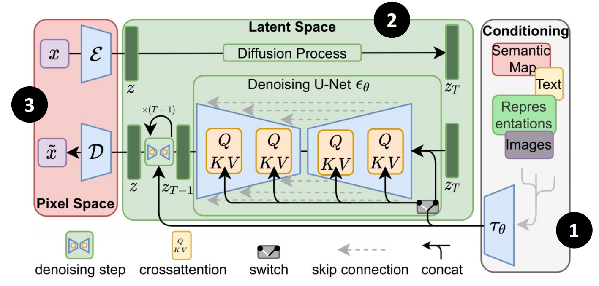
2.2.2 Dall-E系列
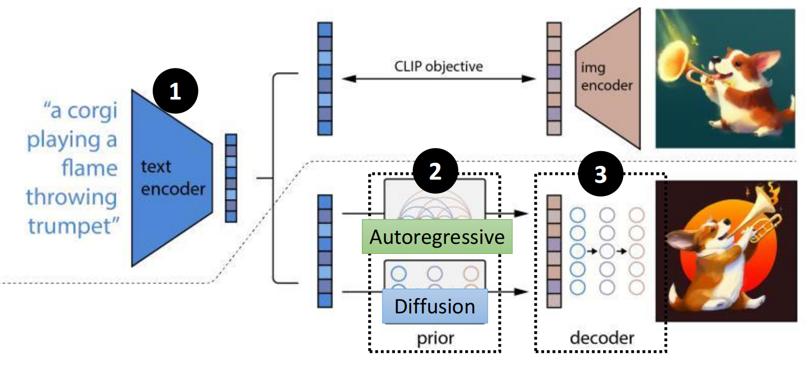
首先是一个文本编码器，之后是一个生成模型，在DALL-E系列中，生成模型有2个：
- Autoregressive model
- Diffusion model
2.2.3 Imagen
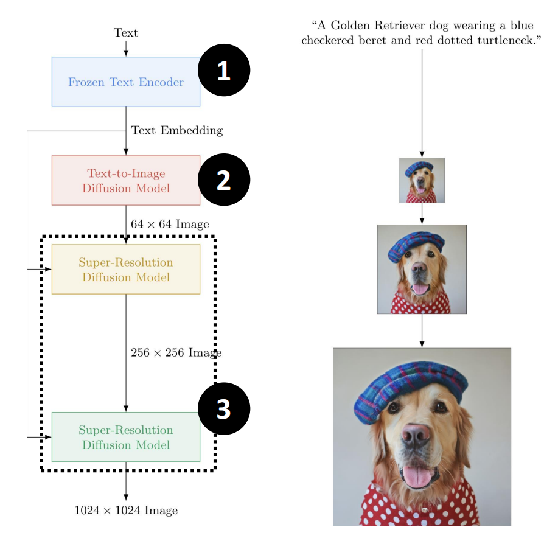
- 在imagen中生成的内容就是人可以看懂的内容
3 模型架构具体分析
3.1 Text Encoder
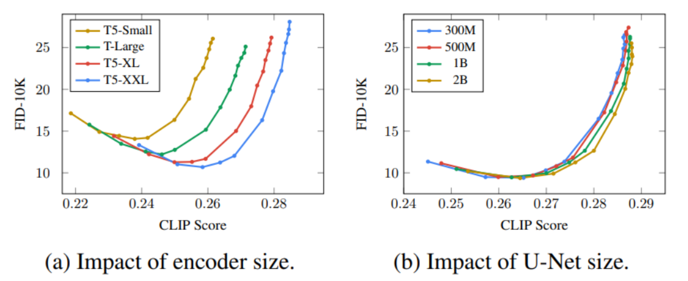
可以用GPT或Bert当作encoder，由上图可以分析，文本编码器对于最终的结果影响还是挺大的。
CLIP Score越大越好，由图a可以分析，随着使用的encoder模型越来越大，所生成的图片的质量越来越高。
相对而言，从图b可以分析，diffusion model的大小相对来说没有那么重要。
3.2 Decoder
只需要使用图片数据就可以训练出来，不用影像和文字的成对的资料。
如果Decoder的输入是一个小图，那么就找很多个小图和大图的数据来进行训练即可，如下：
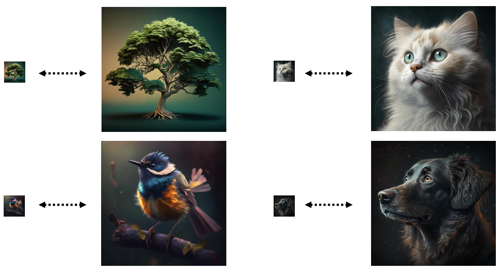
如果输入是中间产物，这时候需要训练一个Auto-encoder，用于把一个图片编码成一个中间产物，然后把这个中间产物作为Decoder的输入。
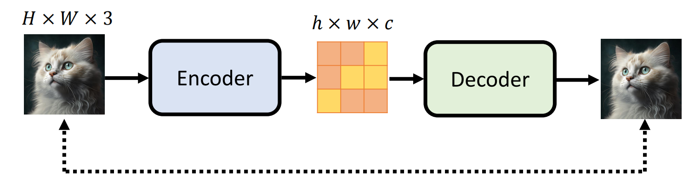
此时需要训练Encoder和Decoder。
3.3 Generation Model
生成模型的输入是文字、图片以及步骤数，输出是中间产物。

如果要训练一个输出是中间产物的生成模型，则输入就应该是sample噪音之后的中间产物。
3.4 评估指标
3.4.1 FID
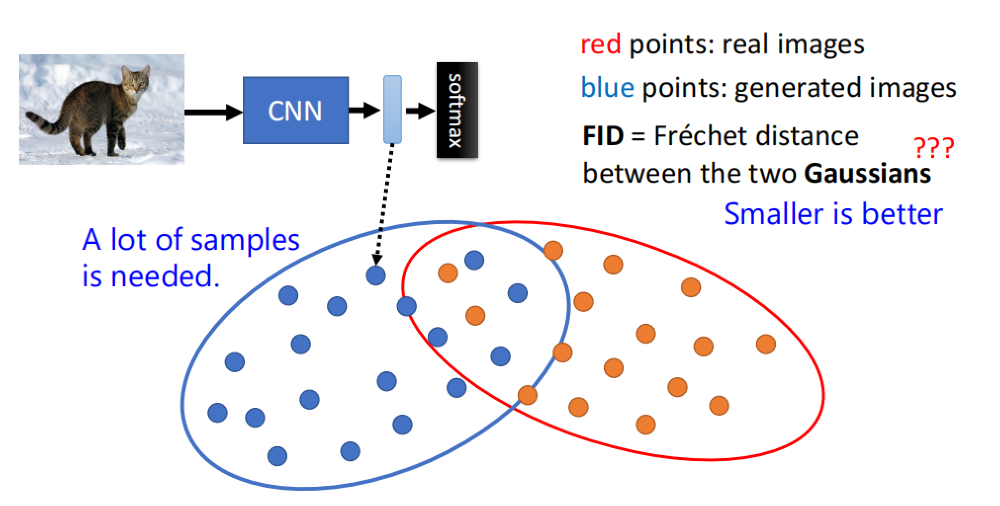
有一个提前训练好的CNN，然后将模型生成的图像输入到这个CNN中，之后将真实影像的输出结果与生成的分布越接近，那么生成的图像与真实的图像越接近。
如何计算这两个分布的差距？
- 假设这两个分布都是高斯分布，然后计算这两个高斯分布的
Frechet Distance，虽然结果看起来比较粗糙，但是结果看起来不错。
FID需要sample大量的image，才能进行衡量，在图b中的纵坐标的10k就是指采样了10k张image来衡量FID的好坏。
3.4.2 CLIP
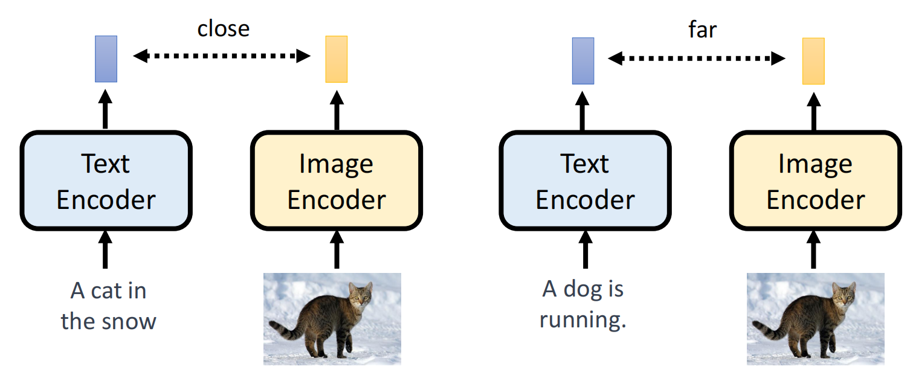
CLIP是用400 million个图片—文本的数据所训练出来的一个模型，模型里有一个Text Encoder和一个Image Encoder，其中文本编码器输入一段文本，产生一个向量，图像编码器输入一个图片，产生一个向量。如果文本和图像是相关的，那么它们的向量越接近越好。
4 背后的数学原理
4.1 训练过程
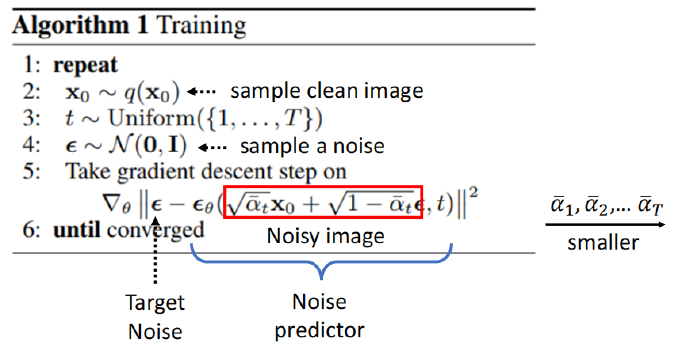
详细分析一下训练的算法：
- 步骤1：重复操作2~5
- 步骤2：采样一个“干净”的图出来
- 步骤3：从之间采样一个整数出来
- 步骤4：从一个正态分布中采样一个出来，大小和image一样大
- 步骤5：实现确定好一个权重，然后将和采样得到的进行加和，得到一个有杂讯的图，其中的设计是从大到小进行变化，所以越大，则越大，则在上加的噪音越多
图示过程如下：
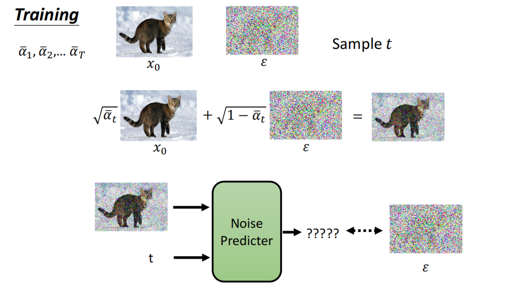
4.2 推理过程

详细分析一下推理的算法：
- 步骤1：从中采样一个全是噪音的图记为
- 步骤2：做reverse process，产生图片
- 步骤3：在每次生图的时候先从中产生一个噪音
- 步骤4：生图的过程，准备2组超参数和，然后先将送入产生一个杂讯，然后使用减去，之后再乘，但是这里还要再加上一个sample出来的杂讯，得到结果
推理过程图示如下：
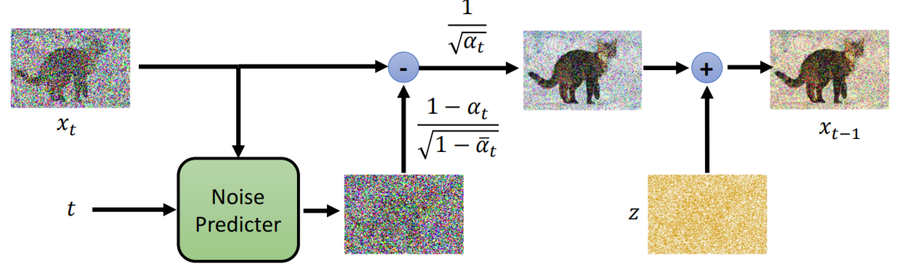
5 影像生成模型本质上共同目标
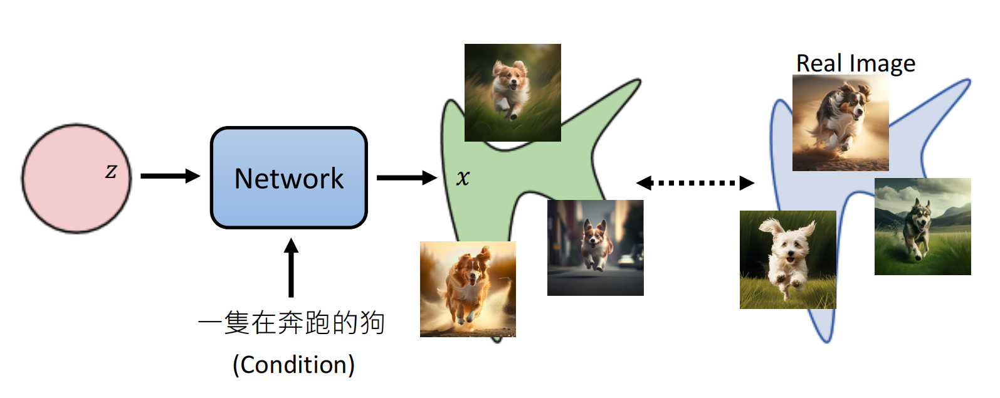
当向模型中输入一段文字时，网络的目标其实是产生一个所有图像的分布。
例如，当提示“一只正在奔跑的狗”，此时产生一个有关于奔跑的狗的分布。此外，有语言提示的模型和没有文字提示的模型在本质上没有区别，因此在接下来讨论数学原理时，假设没有文本提示。
5.1 最大似然估计
目标是使学习到的分布和目标的分布之间越接近越好。
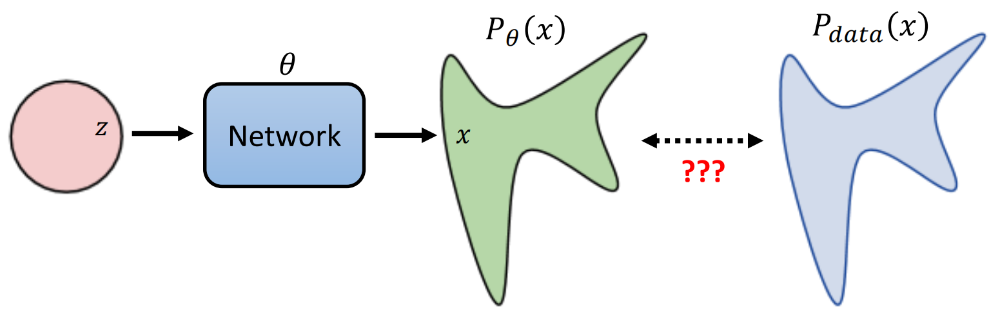
假设模型的参数是，模型输出的分布是，真实的分布是，进行一下运算：
- 首先从中采样一些数据
- 假设能够计算，使用最大似然估计
5.1.1 最大似然估计和两个分布之间的距离的关系
最后推导出最小化两个分布之间的KL距离，KL越大，代表2个分布之间的差距越大，越小则代表之间的差距越小。
5.2 VAE
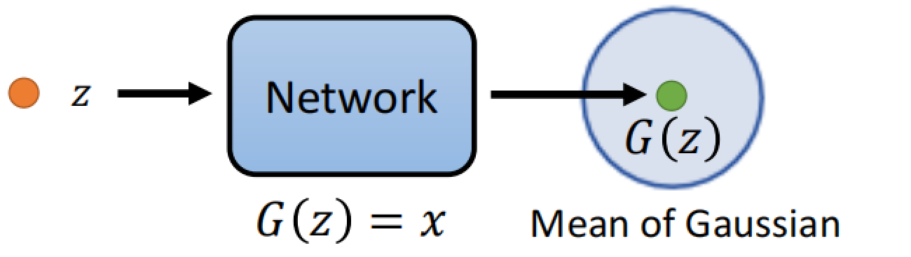
先从高斯分布中采样一个，然后计算得到代表的是一个高斯分布的均值，则有以下：
具体推导如下（看不懂😭）：

5.3 DDPM
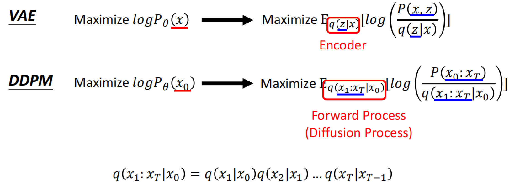
 微信
微信 支付宝
支付宝